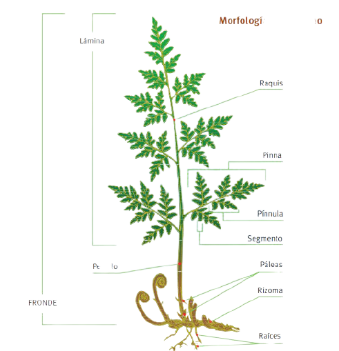

Los helechos (taxón Filicopsida, Pterophyta, Filicinae o Polypodiophyta) son plantas vasculares sin semilla (pteridofitas), cuyas características morfológicas más sobresalientes son sus hojas grandes ("megafilos" o "frondes"), usualmente pinadas y con prefoliación circinada.
La fronda o el fronde es la única hoja grande que presentan los helechos verdaderos o esporófitos, está dividida en numerosos folíolos sésiles. Cada folíolo de algunas frondas presenta corpúsculos marrones en su envés denominados soros que contienen los esporangios (productores de esporas).
El pecíolo o peciolo (del latín petiolus, forma diminutiva de pes, pedis, pie, tronco de una planta) es el rabillo que une la lámina de una hoja a su base foliar o al tallo.El pecíolo puede ser una característica determinante para la identificación de la planta.
La lámina supone un tejido más o menos liso, extendido con el objeto de capturar todos los rayos de sol posibles.
Raquis (plural: raquis) (del griego○ ράχις, espinazo, a través de la latinización raquis) es el nombre para la parte axial de numerosas estructuras compuestas en animales, hongos y vegetales. la parte axial es la Zona comprendida entre el eje de un tallo o rama y una hoja.
Pinna es la división primaria de una fronda de helecho compuesta (Plural - pinnae ). Una subdivisión distinta de la hoja, cuando los segmentos de la hoja están completamente divididos hasta el raquis. Cada pinna está formada por pínulas (las pequeñas hojas). Si un helecho tiene 6 hojas, con cada fronda con 12 pinnas y cada pinna con 32 pínulas, que son las divisiones más pequeñas de las frondas.
La Pálea en los helechos, escama monoestratificada que aparece en le rizoma o base de los frondes.
Un rizoma es un tallo subterráneo con varias yemas que crecen de forma horizontal emitiendo raíces y brotes herbáceos de sus nudos; los cuales cumplen la función de órgano reservante de nutrientes. Los rizomas crecen indefinidamente.
Raíces brotan del rizoma. Son pequeñas y superficiales, y se encargan de absorber los nutrientes para que sean llevados a las hojas, desde donde se producirá la savia elaborada que alimentará al resto de la planta.
Vasos conductores se encuentran en el interior de cada una de las partes del helecho.
El ciclo de vida de los helechos requiere dos generaciones de plantas para completarse, cada una de ellas con una dotación genética diferente, en una generación la dotación genética es diploide y la otra es haploide. El helecho de hojas es parte de la generación es diploide, lo que significa que cada una de las células del individuo cuenta con dos copias de cromosomas. A esta generación se le conoce como esporófito, pues es la que produce esporas.Cuando las esporas germinan, no dan lugar a un nuevo esporófito, sino que dan lugar a un individuo diferente con forma de pequeña plántula. Esta generación se conoce como gametófito, es haploide y en lugar de esporas produce gametos para reproducirse.
Las claves en el ciclo de vida es que el gametófito y el esporófito son diferentes genéticamente. También es clave la capacidad de que el gametófito se reproduzca mediante autogamia o autofertilización (óvulo y espermatozoide procedentes del mismo individuo), o mediante halogamia o polinización cruzada.
Las ventajas de la autogamia es que se necesitan menos esporas para completar el ciclo de vida; también, una línea genética adaptada a su medio puede reproducirse y mantener sus rasgos. La halogamia, cuando se produce, aumenta las posibilidades de variabilidad genética.
El ciclo de vida de los helechos en los que se alternan los esporófitos y los gametófitos se da cuando se reproducen mediante reproducción sexual, pero los helechos también seguir varias formas de reproducción asexual: